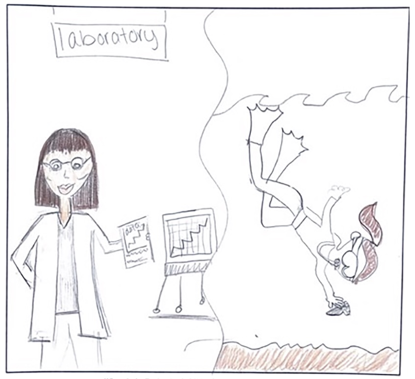
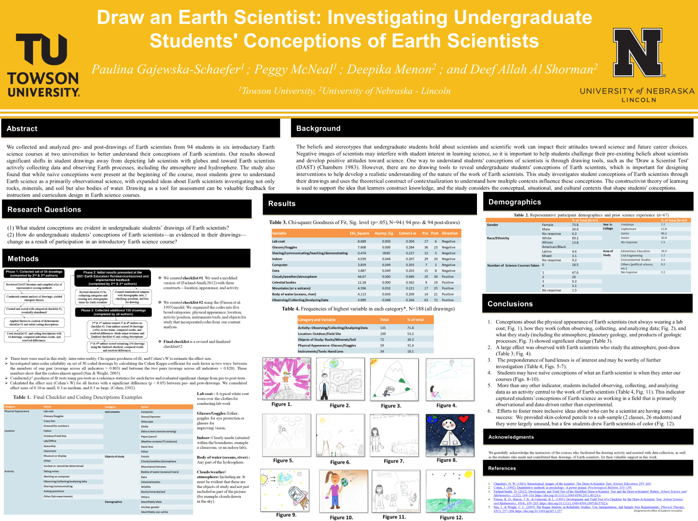

Research Projects › Draw an Earth Scientist
Using drawing as a tool to investigate how undergraduate students picture earth scientists — and what those images reveal about their conceptions of the field.
This work uses student drawings to surface conceptions of geoscientists, building on the published study Using Drawing as a Tool for Investigating Undergraduate Conceptions of Earth Scientists.

